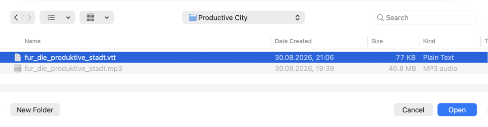

1

2

3
- J · K · L
- ↑ · ↓
- ⌥+J/K/L
- Ctrl+L · Ctrl+X

4

5

6


7

| MacWhisper | Aiko | Buzz | |||
|---|---|---|---|---|---|
| AGPL-3.0 | |||||
| DE · EN · FR · IT | EN | EN | |||
| macOS (Apple Silicon) | macOS | macOS, iOS | macOS, Windows, Linux | ||
127.0.0.1:5628ggml-large-v3-turbo.bingit clone
| MacWhisper | Aiko | Buzz | |||
|---|---|---|---|---|---|
| AGPL-3.0 | |||||
| DE · EN · FR · IT | EN | EN | |||
| macOS (Apple Silicon) | macOS | macOS, iOS | macOS, Windows, Linux | ||
127.0.0.1:5628ggml-large-v3-turbo.bingit clone